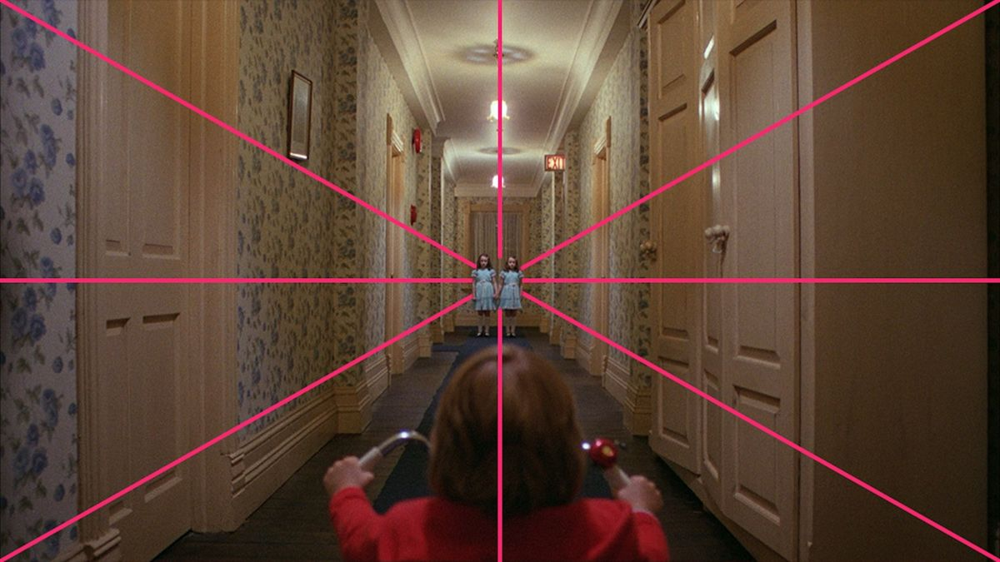
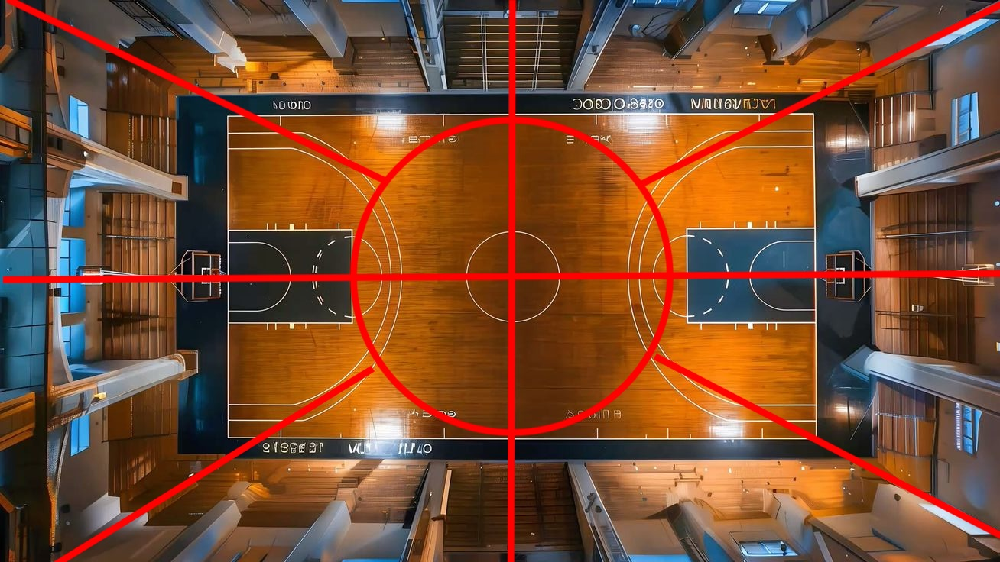
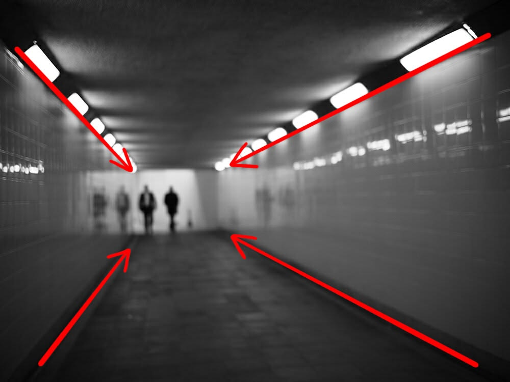
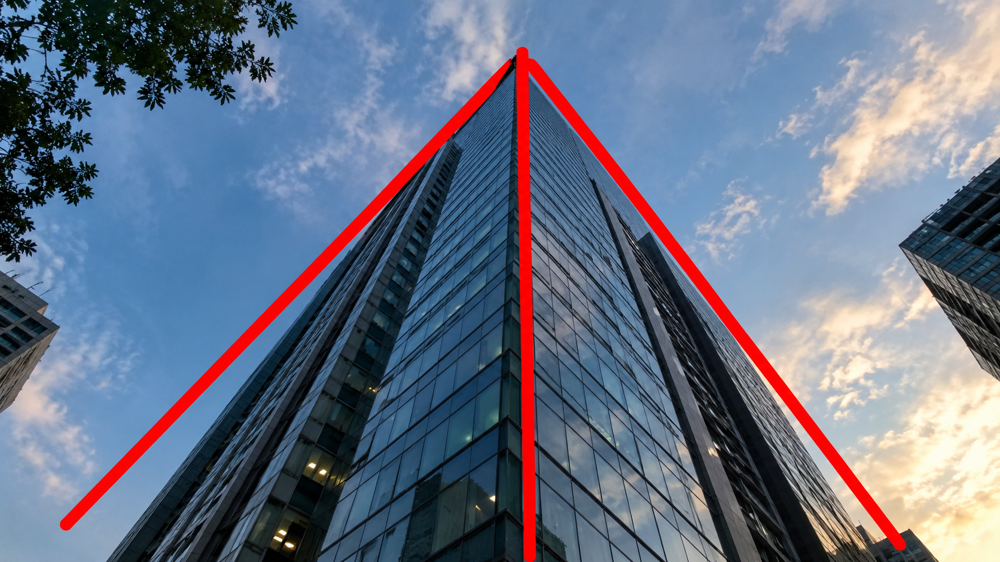

Website Building SoftwareThe deliberate arrangement of visual elements
within a camera frame to tell a story, guide the
viewer's eye, and evoke specific emotions.

the balanced arrangement of visual elements where two halves of an image or artwork mirror each other across a central axis or point

a perspective that looks straight down at a subject or location from above, as if seen from the sky or directly overhead at a 90-degree angle.

a visual composition technique in photography, art, and design where natural or man-made lines guide the viewer's eyes through an image directly toward a primary subject or focal point

A camera or photography technique where the camera is placed below the subject's eye level
(ranging from chest or waist height down to the ground) and tilted upward
Website Building Software